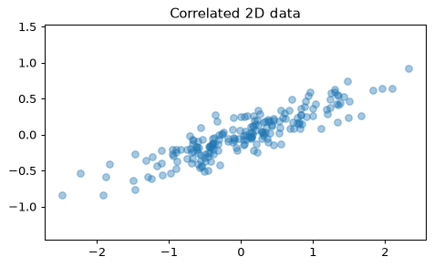
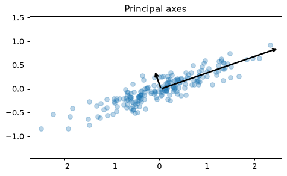
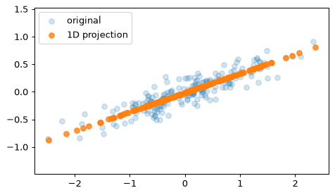
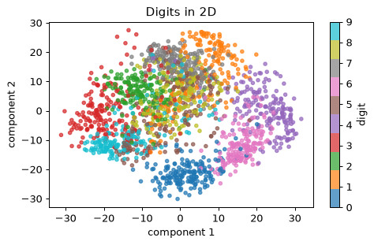
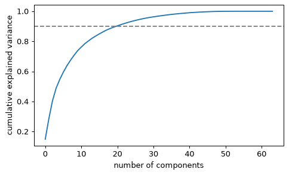

- Handbook 5.09 In Depth: Principal Component Analysis
- Handbook 5.10 In-Depth: Manifold Learning（名前だけ）
主成分分析（PCA）のイメージ
PCAは教師なしの次元削減手法です。データのばらつきが最も大きい方向（第1主成分）、次にそれと直交して大きい方向（第2主成分）…を順に見つけます。
from sklearn.decomposition import PCA rng = np.random.RandomState(1) X = np.dot(rng.rand(2, 2), rng.randn(2, 200)).T
plt.scatter(X[:, 0], X[:, 1], alpha=0.4) plt.axis('equal') plt.title('Correlated 2D data')

pca = PCA(n_components=2) pca.fit(X) print(pca.components_.round(3)) print(pca.explained_variance_.round(3))
components_が各主成分の向き、explained_variance_がその方向のばらつき（分散）です。
plt.scatter(X[:, 0], X[:, 1], alpha=0.3) for length, vector in zip(pca.explained_variance_, pca.components_): v = vector * 3 * np.sqrt(length) plt.annotate('', pca.mean_ + v, pca.mean_, arrowprops=dict(arrowstyle='->', linewidth=2, color='black')) plt.axis('equal') plt.title('Principal axes')

データの雲に「長い軸」と「短い軸」を引く。長い軸が第1主成分です。
学習済みの pca の components_ の形（shape）を sh に入れてください。
sh = pca.components_.shape
(2, 2) です。
次元を減らす
n_components=1にすると、2次元のデータが1次元に圧縮されます。inverse_transformで元の空間に戻すと、情報の一部が失われた様子が見えます。
pca1 = PCA(n_components=1) X_pca = pca1.fit_transform(X) print(X.shape, '->', X_pca.shape) print(pca1.explained_variance_ratio_.round(3))
X_new = pca1.inverse_transform(X_pca) plt.scatter(X[:, 0], X[:, 1], alpha=0.2, label='original') plt.scatter(X_new[:, 0], X_new[:, 1], alpha=0.8, label='1D projection') plt.axis('equal') plt.legend()

影絵のように、一番情報が残る向きへ押しつぶすイメージです。
このXにPCA(n_components=2)を当てはめ、第1主成分の寄与率（explained_variance_ratio_[0]）を小数第3位で丸めて r に入れてください。
r = round(PCA(n_components=2).fit(X).explained_variance_ratio_[0], 3)
第1主成分だけで約0.98の情報が残ります。
高次元データを可視化：手書き数字
8×8ピクセルの手書き数字（load_digits）は、1枚が64次元のデータです。PCAで2次元にすると、数字ごとの塊が見えてきます。
from sklearn.datasets import load_digits digits = load_digits() print(digits.data.shape) pca = PCA(2) proj = pca.fit_transform(digits.data) print(proj.shape)
plt.scatter(proj[:, 0], proj[:, 1], c=digits.target, cmap='tab10', s=12, alpha=0.7) plt.colorbar(label='digit') plt.xlabel('component 1') plt.ylabel('component 2') plt.title('Digits in 2D')

ラベルは色付けにだけ使いました。PCA自身はラベルを見ていません（教師なし）。
digits.data を PCA(n_components=3) で変換した結果の形を sh に入れてください。
sh = PCA(n_components=3).fit_transform(digits.data).shape
(1797, 3) です。
成分の数をどう選ぶ？
主成分を何個残すかは、累積寄与率（足し合わせた説明力）で決めます。たとえば「情報の90%を残す最小の個数」を探します。
pca_full = PCA().fit(digits.data) cum = np.cumsum(pca_full.explained_variance_ratio_) plt.plot(cum) plt.axhline(0.9, color='gray', linestyle='--') plt.xlabel('number of components') plt.ylabel('cumulative explained variance')

print('90%を超える最小の成分数:', int(np.argmax(cum >= 0.9)) + 1)
PCA(0.9)のように割合を渡すと、自動でその個数を選んでくれます。
print(PCA(0.9).fit(digits.data).n_components_)
64個の成分のうち、約20個で情報の9割が説明できます。
ratio = np.array([0.6, 0.25, 0.1, 0.05]) の累積和を cum に入れてください。
cum = np.cumsum(ratio)
[0.6, 0.85, 0.95, 1.0] です。